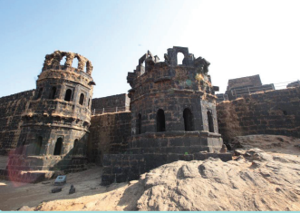
To trace the origin and the growth of Maratha kingdom with particular emphasis on the role played by Shivaji in strengthening it .
To know about the administrative structure introduced by Shivaji .
To examine how far the Marathas were responsible for the decline of the Mughals .
To assess the role of Peshwas in carrying on Maratha power .
The rising power of the Marathas in the south-west posed the real danger to the Mughal Empire . Shahji Bhonsle, Shivaji’s father, an officer of the Ahmednagar State and later Bijapur, proved to be a thorn in the Fesh of the Mughals, even in Shah Jahan’s period . But it was his son, Shivaji, who attained glory among the Marathas as he could stop the Mughal Empire’s expansion in the Deccan . Shivaji was a gallant fighter, army general and a guerilla leader . He built up a band of brave mountaineers, who were loyal to him . With their help, he captured many forts and gave Aurangzeb’s commanders a tough time . As Marathas grew stronger, the Mughal Empire weakened . The Mughal Emperor had to recognise the right of the Marathas to collect their Chauth tax all over the Deccan . Warfare opened opportunities for talented commanders who contributed to the vigorous expansion of Maratha power early in the eighteenth century . The prime minister of Maratha rulers, called the Peshwas from the time of Shahu, held real power. Under the aegis of Maratha power, the Peshwas continued their supremacy until 1761 .
Geographical Features
The physical features of the Maratha country developed certain peculiar qualities among the Marathas, which distinguished them from the rest of the people of India . During the sixteenth century, the sultans of Bijapur and Ahmednagar had recruited them to serve in cavalry . Their presence was helpful to the sultans in balancing the political ambitions of the Muslim soldiers in their service . The rocky and mountainous terrain gave protection to the Marathas from invaders . It proved to be advantageous in guerrilla warfare for Marathas.
The spread of the Bhakti movement in Maharashtra helped the Maratha people develop consciousness of their identity and oneness. It promoted a feeling of unity, especially in terms of social equality, among the Marathas. In the Maratha region, the religious leaders were drawn from different social groups. Eknath, Tukaram and Ramdas were the noted Bhakti saints. Tukaram and Ramdas had considerable influence on the life of Shivaji.
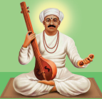
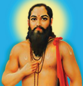
Marathi language and literature also served to develop unity among the people. Hymns composed in the Marathi language by Bhakti saints were sung by people of all castes and classes.
Shivaji, born in 1627, grew up under the care of his mother, Jijabai, who influenced him
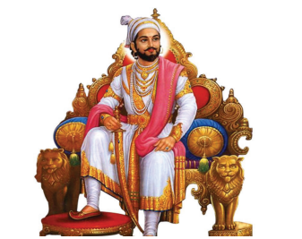
with stories from the Hindu epics, Ramayana and the Mahabharatha . Shivaji’s teacher and guardian, Dada ji Kondadev, trained him in the art of horse riding, warfare and state administration . At the age of eighteen in 1645, when he had just entered the military career, he successfully captured Konda na, a fort near Poona. The following year, he took the fort of Torna . Then he succeeded in conquering Raigarh, which was rebuilt by him .
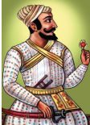
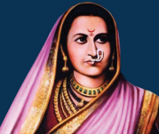
Shivaji became totally independent after the death of his guardian Kondadev (1649) . He also got his father’s jagir transferred to him, which was earlier looked after by Kondadev . The strength of his army was Mavali foot soldiers . With their help, Shivaji conquered many of the hill forts near Poona . He captured Puranthar from the Mughals . Shivaji’s military raids angered the Sultan of Bijapur . He held Shivaji’s father captive and released him only after Shivaji promised to suspend his military raids . Shivaji kept his word and remained at peace with Bijapur from then on till his father Shahji’s death . During this period he toned up his administration .
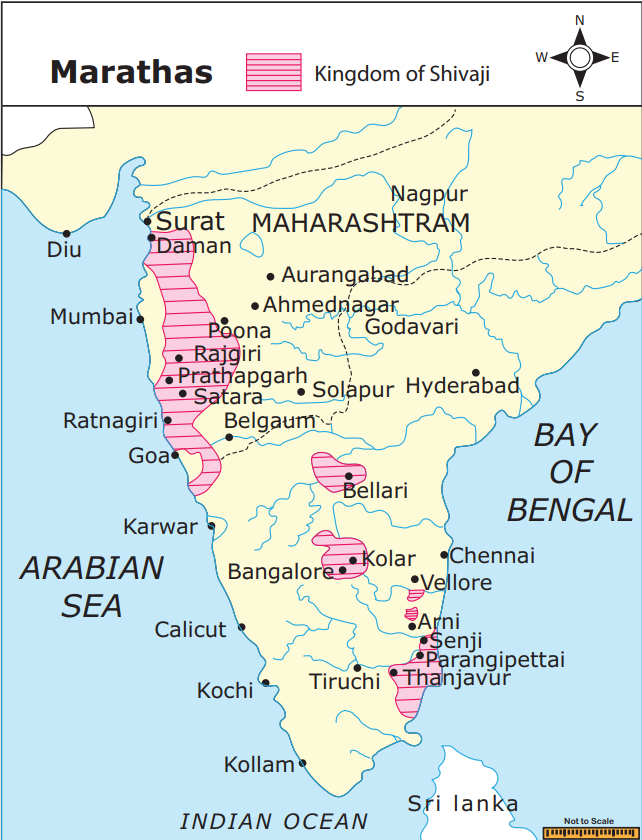
Shivaji resumed his raids aft er his father’s death and conquered Javali (1656) from the Maratha chief Chandrarao More . He also reduced all the lesser Maratha chiefs around Pune to subordination . The soldiers of Bijapur from the hill fortresses acquired by Sultan of Bijapur were driven out and replaced with his own commanders . These moves and the defeat of Bijapur army sent to punish Shivaji alarmed the Mughal officials . When the Mughals made a punitive expedition, Shivaji boldly confronted them . In 1659 he killed Afzal Khan, a notable general of Bijapur. In 1663 he wounded and chased away the Mughal general and Aurangzeb’s uncle Shaista Khan . To cap these bold acts, he audaciously directed his soldiers to plunder Surat (1664), the major Mughal port on the Arabian Sea .
After Shivaji plundered Surat, Aurangzeb swung into action . An army under the command of a Rajput general, Raja Jai Singh, was ordered to destroy Shivaji and annex Bijapur . Shivaji finally sought peace, yielded the fortresses he had seized and accepted service as a mansabhdar in the Mughal service for the conquest of Bijapur . He also agreed to visit the imperial court at Agra, on the advice of Jai Singh only to suffer humiliation, which led him to escape, by hiding in a basket . Aurangzeb was determined to stop the Maratha interference in his expeditions against the Deccan kingdoms . He attempted to patch up with Shivaji, but those efforts failed. In 1670, the Mughal army was helpless when Shivaji again plundered Surat . In 1674, Shivaji crowned himself by assuming the title of Chhtrapati and the coronation of Shivaji was celebrated with great splendour at Raigarh, as the occasion was the founding of a new kingdom and a new dynasty . Shivaji’s aged mother Jijabai, who had lived to see her son crowned the king, passed away a few days after the coronation, with her life wish fulfilled . Shivaji spent his last years trying to bring his son Shambhuji into his ways as he had defected to the Mughals . He fell ill with fever and dysentery and died in 1680 .
Chhatra (parasol) pati (master or lord),is the Sanskrit equivalent of king or emperor, and was used by the Marathas, especially Shivaji .
Shivaji’s political system consisted of three circles . At the centre was the swaraj . Shivaji was caring and would not allow the people to be harassed in any way . In the second circle, Shivaji claimed suzerainty, but he did not administer them himself . He protected the people from loot and plunder for which they were required to pay Chauth (one-fourth of the revenue as protection money) and Sardeshmukhi (an extra one-tenth, as the chieft ain’s due). In the third circle, Shivaji’s only objective was plunder . Deshmukhs held sway over rural regions and their control was over between twenty and hundred villages . Each village had a powerful headman (Patil), who was assisted by a village accountant of a keeper of records (Kulkarni) . In the absence of a strong central government, these local community level officials functioned as the true government .
Shivaji gave utmost attention to his army and training of its personnel . In the beginning, the backbone of his army was the infantry . But as his campaigns extended into the plains, his cavalry grew in size and importance . Every soldier was selected personally by Shivaji and was taken into service on the assurance of a soldier already in service. Shivaji took great care in the maintenance and security of his forts. Retired captains holding a high reputation were put in charge of guarding the forts.
Shivaji designated eight ministers as the Ashtapradhan, each holding an important portfolio. Peshwa was the equivalent of a modern prime minister in the Maratha Empire . Originally, they were subordinates to the Chhatrapati . But, in course of time, especially from the time of Sahu Maharaja, Peshwa became the de facto Maratha ruler while the Chhatrapati was reduced to the position of a nominal ruler . Shivaji was influenced by the Mughal revenue system . The assessments were made on the actual yield, with three-fifths left to the cultivator and two-fifths taken by the government. In judicial administration, civil cases continued to be decided by the panchayat, the village council, while criminal law was based on the shastras, the Hindu law books.
Pantpradhan slash Peshwa |
Prime Minister |
Amatya slash Mazumdar |
Finance Minister
|
Shurunavis slash Sacheev |
Secretary |
Waqia-Navis |
Interior Minister
|
Sar i Naubat slash Senapati |
Commander in Chief
|
Sumant slash Dubeer |
Foreign Minister
|
Nyayadhish |
Chief Justice
|
Panditrao |
High Priest
|
Shambhuji succeeded Shivaji after a succession tussle with Anaji Datto . There were family feuds splintering the Maratha kingdom . Durgadas of Rathore Marwar and Aurangzeb’s rebel son Akbar arrived in Maharashtra and took shelter in Shambhuji’s court . Aurangzeb viewed these developments very seriously and took all out efforts to finish off Shambhuji . Marathas under Shambhuji were in no position to resist the Mughals . Aurangzeb himself arrived in the Deccan in 1681 . Aurangzeb’s main goal was the annexation of Bijapur and Golconda . These two sultanates fell to Aurangzeb by 1687 . In little over a year, Shambhuji was captured by the Mughals and, after torture, put to death .
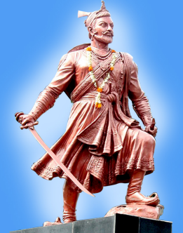
Shambhuji was under the wicked influence of his family priest Kavi Kalash. Kavi Kalash was the caretaker of Shambhuji in Varanasi during Shivaji’s flight from Agra. He later brought Shambhuji safely to Raigarh . His dominance in the Court became absolute in course of time, as Shambhuji looked to his advice for everything . Kavi Kalash was a distinguished scholar and poet . But he was a practitioner of witchcraft . So the orthodox Hindus in the court had developed a deep hatred for him When Shambhuji was captured by the Mughal army, he was found to be in the company of Kavi Kalash . So both of them were subjected to all forms of torture and then executed by the orders of Aurangzeb .
Shivaji's grandson Shahu means honest, originally a name given by Aurangzeb to contrast his character with that of Shivaji) ruled from 1708 to 1749. During the first half of the eighteenth century, consolidation of royal power was achieved through conferment of royal entitlements upon those who served Shahu.
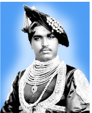
During Shahu’s 40-year reign there was increase in the territory under the Maratha control, from which tribute was regularly extracted . More centralised and strong state structure also began to take shape. Every household, including that of landed household, profited from state employment . Peshwas
Balaji Vishwanath (1713 to 1720) began his career as a small revenue official and became Peshwa in 1713 . Much against the advice from his close circles, Shahu appointed 20-year-old Viswanath’s eldest son Bajirao to occupy the office of Peshwa .
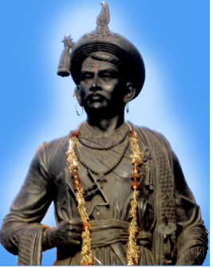
Bajirao decided to launch a major Maratha onslaught against the Mughals and the Nizam of Hyderabad . He assumed the powers of the commander-in-chief . He was wise in his choice of commanders for these campaigns . Instead of relying on the traditional elite group, namely Deshmukhs, he gave commands to the Gaikwad, Holkar and Shinde or Scindhia families who had been loyal to the emperor Shahu, his father Balaji Viswanath and to him .
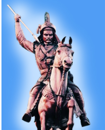
Gaikwad at Baroda
Bhonsle at Nagpur
Holkar at Indore
Shinde or cindhia at Gwalior
Peshwa at Pune
Bajirao proclaimed wars against Malwa and Gujarat and freed them from Mughal domination . The Mughal army and the troops of the Nizam that intervened on behalf of the Mughals were defeated . Bajirao succeeded in getting the recognition of Shahu as the king of Maharashtra and overlord of the rest of the Deccan, from which the tribute of Chauth and Sardeshmukhi could be legally collected by the Maratha officials . Bajirao centralised the fiscal functions in Pune. This helped to receive the prompt transmission of tribute from the Deccan . The Maratha army, which consisted of no more than 5000 horsemen and no artillery, had by 1720 had doubled in its size . Yet they were no match for the Mughals and the Nizam . The success of Marathas against the Mughals was mainly due to the weakness of the latter . The Maratha dominance in the Deccan is also attributed to the qualities of Maratha officials and generals who grew up under Shahu and the Peshwas .
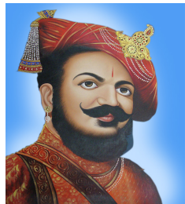
When Balaji Bajirao was the Peshwa, Emperor Shahu died (1749) . A possible succession struggle among factions of the royal family was averted, thanks to the timely intervention of Balaji Bajirao . He summoned all the contending factions and forced them to accept the conditions he laid down . He decided that the capital of the kingdom would henceforward be Pune, not Satara . All power and authority was now concentrated in the Peshwas’s office . Balaji Bajirao now commanded an army of paid soldiers . The Maratha peasant warrior band was reconfigured and its run came to an end . Maratha soldiers were not permitted now to retire from battle fields each year for the purpose of cultivating their land . Soldiers were required to live in forts and towns far away from their home . They were trained as infantrymen as well as horsemen. The large guns were nominally under the command of Maratha officers . But those who fired and maintained them were mostly Portuguese, French and British . During the period of the Peshwa Balaji Bajirao, the northern frontiers of the Maratha state were rapidly touching Rajasthan, Delhi and the Punjab . At some point, the Maratha tributary regime extended itself to within fifty miles of Delhi . The Marathas launched raids from Nagpur against Bihar, Bengal and Odisha . Not with standing the conflict between the Marathas and the Nizam over Karnataka, Tamil, Kannada and Telugu regions were effectively brought under the control of the Marathas . Between 1745 and 1751 plundering expeditions were launched yearly by the Maratha chieftain Rahuji Bhonsle .
The revenue administration of Peshwas was headed by a key official called the Kamavisdar . He was appointed by the Peshwa . He was empowered to maintain a small body of soldiers to police the administrative area, from where tribute or tax had to be collected . A small staff of clerks and servants were employed to maintain the revenue records . These records were randomly checked by the office of the Peshwa . The contracts for revenue collection was auctioned annually after the revenue for a particular place was estimated by the Peshwa’s civil servants, based on previous years’ yields . A prospective tax or revenue collector who won the contract was expected to have a reputation for wealth and probity . He was required to pay a portion of the whole of the anticipated revenue one-third to one half either out of his own wealth or from the money borrowed from bankers . Judging from the ledgers of correspondence and account books, it is evident that the Peshwas were keen on accurate recordkeeping . The Peshwa regimes looked distinctly modern in comparison with the Mughals to whose fall they contributed militarily .
The imperial moment of the Marathas sadly ended at Panipat near Delhi in 1761 . The Marathas’ attempt to extend their domain beyond Punjab was checked by the king of the Afghans, Ahmad Shah Abdali .
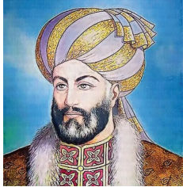
Abdali invaded eight times before finally marching onto Delhi . The Marathas were now divided among several commanders, who approached the battle with different tactics . Artillery decided the battle in January 1761 . The mobile artillery of the Afghans proved lethal against both Maratha cavalry and infantry . The Maratha army was shattered and the surviving men took six months to return to Maharashtra from Panipat to report the tragedy . By then Maratha supremacy over the sub-continent was effectively over .
The factors responsible for the rise and expansion of Maratha rule are explored .
Early life of Shivaji and the influences that worked on him are traced .
Shivaji’s military raids and victory over Bijapur Sultan’s army inviting Aurangzeb’s intervention are discussed .
Confrontation of Shivaji with Aurangzeb and their fallout in the Deccan are dealt with .
Maratha administration under Shivaji is highlighted .
Maratha affairs after the death of Shivaji under Shambhuji and Sahu are analysed .
Peshwas emerging de facto rulers and their contribution to the continuance of Maratha power are explained .
Modernisation of administration under the Peshwas and the end of Maratha supremacy after the Third Battle of Panipat are detailed.
Glossary |
|
|
|
1 |
hymns |
poems in praise of God |
துதிபாடல்கள் அல்லது பாசுரங்கள் |
2 |
audaciously |
boldly |
துணிச்சலான |
3 |
fortresses |
a strongly fortified town |
கோட்டை அல்லது அரண் |
4 |
suzerainty |
the right of a country to rule over another country |
மேலாதிக்கம் |
5 |
conferment |
granting of (a title) |
வழங்கப்பட்ட |
6 |
summoned |
ordering the presence of |
வரவழைக்கப்பட்ட |
7 |
shattered |
(heart)broken, broken (glass), upset |
மனமுடைந்த
|
1 . Satish Chandra, History of Medieval India 800-1700, Orient Blackswan, New Delhi, 2007.
2 . J .L . Mehta, Advanced Study in the history of Medieval India : Mughal Empire, Volume second , 1526-1707, Sterling Publishers, 2011 .
3 . Burton Stein, A History of India, Blackswell, 2010 .
4 . Abraham Eraly, The Emperors of Peacock Throne, Penguin, 2007
1. Who was the teacher and guardian of Shivaji?
a) Dadaji Kondadev
b) Kavi Kalash
c) Jijabai
d) Ramdas
2. How was the Prime Minister of Maratha kings known?
a) Deshmukh
b) Peshwa
c) Panditrao
d) Patil
3. Name the family priest of Shambhuji who influenced him in his day-to-day administration.
a) Shahu
b) Anaji Datta
c) Dadaji Kondadev
d)Kavi Kalash
4. What was the backbone of Shivaji’s army in the beginning?
a) Artillery
b) Cavalry
c) Infantry
d)Elephantry
5. Who proclaimed wars and freed Malwa and Gujarat from Mughal domination?
a) Balaji Vishwanath
b) Bajirao
c) Balaji Bajirao
d) Shahu second.
1. The spread of the dash movement in Maharashtra helped the Maratha people develop consciousness and oneness.
2. DASH was the key official of revenue administration of Peshwa.
3. The imperial moment of the Marathas sadly ended at DASH in 1761.
4. DASH was the foreign minister in the Ashtapradhan.
5. Shambhuji succeeded Shivaji after a succession tussle with DASH .
1. Shaji Bhonsle , Mother of Shivaji
2. Shambhuji , General of Bijapur
3. Shahu , Shivaji’s father
4. Jijabai , Son of Shivaji
5. Afzal khan , Shivaji’s grandson
1. The rocky and mountainous terrain gave protection to the Marathas from invaders.
2. Hymns composed in Sanskrit by the Bhakti saints were sung by people of all castes and classes.
3. Shivaji captured Puranthar from the Mughals .
4. Deshmukhs held sway over rural regions and their control was over between twenty and hundred villages.
5. Abdali invaded ten times before finally marching on Delhi.
1 . Assertion (A) : Soldiers were to live in forts and towns far away from home .
Reason (R) : Maratha soldiers were not permitted to retire from battle fields each year for the purpose of cultivating their land.
a) Reason is correct explanation of Assertion
b) Reason is not the correct explanation of Assertion
c) Assertion is Wrong and Reason is correct
d) Assertion and Reason are wrong
2. Statement 1 : Judging from the ledgers of correspondence and account books, Peshwas were keen on accurate recordkeeping.
Statement 2 : Artillery decided the battle at Panipat in 1761.
a) 1 is correct
b) 2 is correct
c) 1 and 2 are correct
d) 1 and 2 are false
Shahji, Shivaji, Shambhuji, Shahu, Rahuji Bhonsle.
1. Gaikwad Baroda
2. Peshwa Nagpur
3. Holkar Indore
4. Shinde Gwalior
1. Shivaji became totally independent after the death of his guardian Kondadev.
2. Emperor Shahu died when Balaji Bajirao was Peshwa.
3 . Shivaji resumed his military raids after his father’s death and conquered Javali.
4. Balaji Vishwanath became Peshwa.
1. The impact of Bhakti movement on Marathas.
2. Chauth and Sardeshmukhi
3. Role of Kamavisdar in Maratha revenue administration.
4. Execution of Shambhuji by Mughal Army.
5. Battle of Panipat fought in 1761.
1. Examine the essential features of Maratha administration under Shivaji.
1. Compare the revenue administration of the Peshwas with that of Shivaji.
1. Maratha Empire with prominent cities and forts.
A B
Amatya , Foreign Minister
Waqia – Navis , Commander-in-Chief
Sumant , Finance Minister
Senapati , Interior Minister
Collect information about the Thanjavur Marathas with special reference to their contribution to education, art and architecture.
Explore ‘The Marathas’
Lets’ Explore, Quiz and ‘Play
PROCEDURE :
Step 1 : Type the URL https://www.marathaempire.in/ or scan the QR code to open the website. Step 2 : You can explore the timeline, historical locations, and map. Animations, Photo gallery of the forts of Maratha Empire.
Step-3 : You can take self-evaluation through ‘Quiz Me Now’ in this website.
Step-4 : You can play ‘Square Me’ in this website by using the instructions given there .
The Marathas URL:
Pictures are indicative only
If browser requires, allow Flash Player or Java Script to load the page.